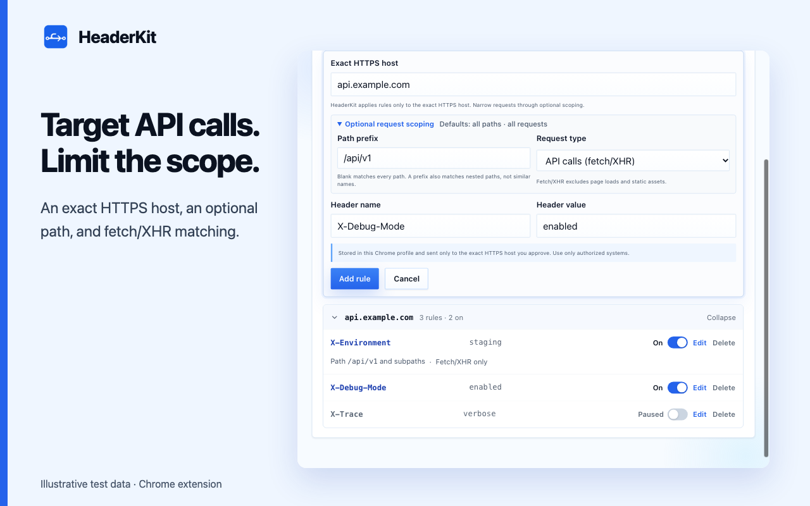
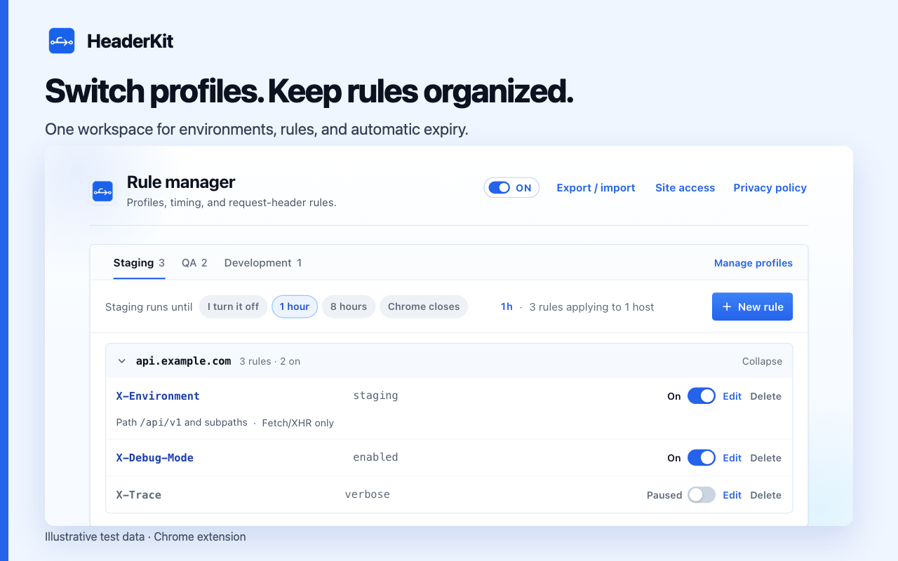
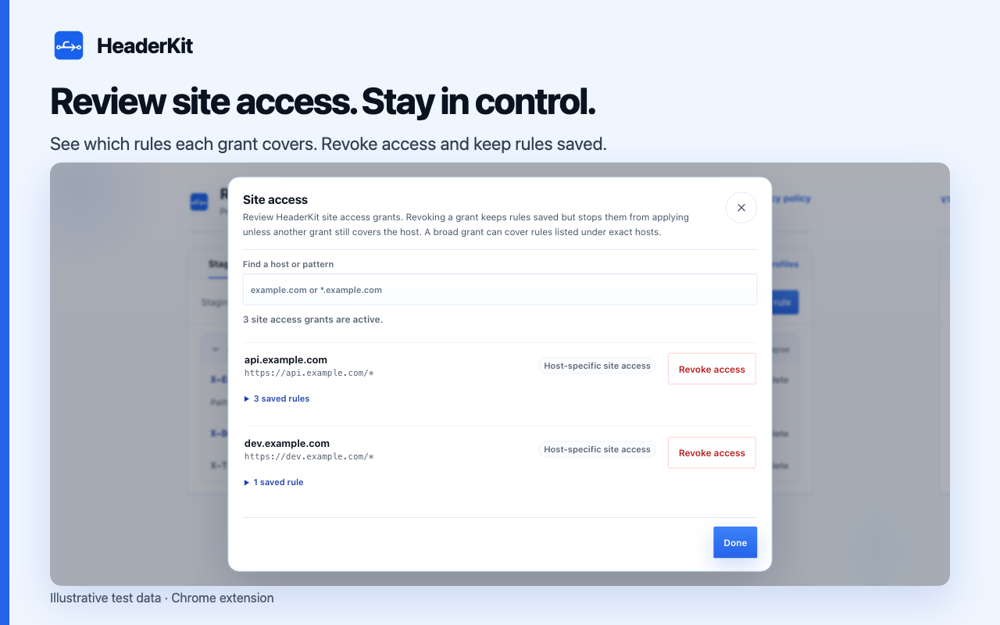

Request-header testing guides for Chrome
Modify headers, switch profiles, and set automatic expiry.
01 / First rule
Modify request headers for an HTTPS API in Chrome
Create exact-host rules. Scope API paths or fetch/XHR requests. Verify in DevTools.

02 / Environments
Switch staging and QA request headers with profiles
Separate staging and QA headers. Switch profiles without retyping values.

03 / Automatic expiry
Automatically turn off temporary test headers in Chrome
Set one-hour, eight-hour, or browser-session expiry. Keep rules saved for later tests.

Ready for the next API test.
Free. Local settings. Chrome 120 or later.